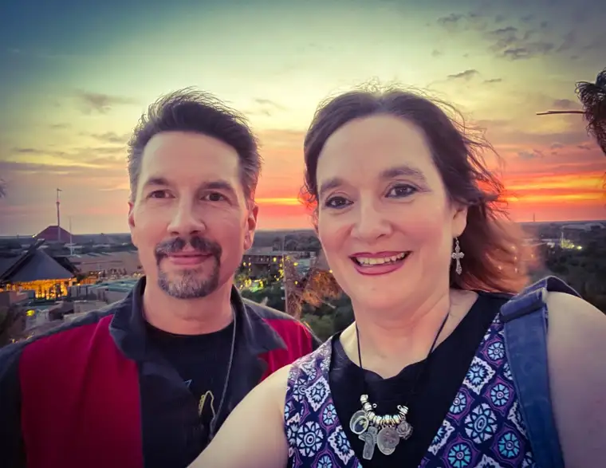
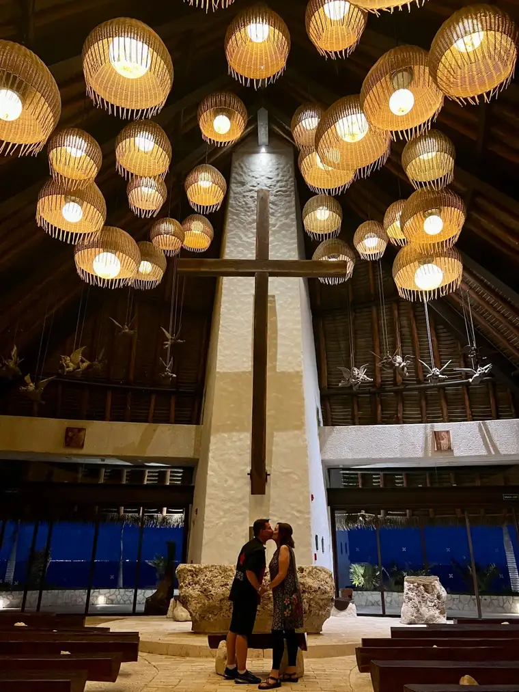
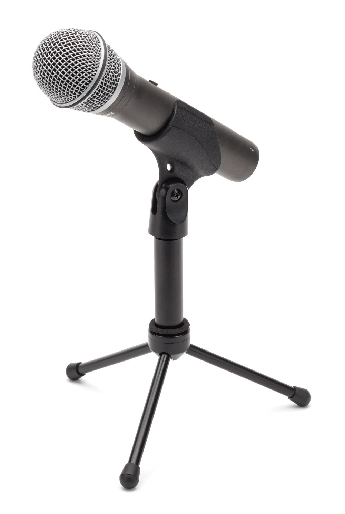

Good New Year’s Eve 2023! We are, as always this time of year, on the cusp of a brand new year. And as I’ve been doing for the past 16 years, I am revealing the word that I have chosen to guide me the next 12 months.
This tradition began with a few friends and it challenges me each year to contemplate what word seems to be calling to me at this time in my life. In past years, I’ve chosen these words: 2008, Awaken (2008); Healing (2009); Transition (2010); Pursue (2011); Ready (2012); Joy (2013); Expectation (2014); Receive (2015) ; Trust (2016); Hope and Health (2017); Alive (2018); Wisdom (2019); Family (2020); Light (2021)!; Presence (2022); and Rest (in Him) (2023).
But I think my favorite so far has been the one I chose–and desperately needed–this past year. What a beautiful word “Rest” (in Him) was for me, and unlike some years when the word fades a bit as the months stretch on, this one didn’t. This One Word became a trusted friend.
That word really reached out to me in April, when my husband and I had a chance to travel to Mexico, where we relaxed together along the shores of the Caribbean Sea. It had been a year, and the chance to stretch our toes in the sand, watch the iguanas slither about and up and down rocks, stand under waterfalls, sip drinks from pools atop buildings that overlooked the ocean for many miles…helped reset my soul.

Yes, that’s me and my cute husband being truly at rest after one of my hardest years of our parenting lives. Our room was right across from the resort’s beautiful Catholic chapel on a hill. We’d wandered up there the night before this moment, climbing many stairs just in time to reach the sunset.

We were on the way down when a resort worker asked if we wanted a few photos to celebrate our marriage.

Resting in His arms included being able to rest in the arms of my husband of 32 years. We have been through hell and back in our marriage, but wow, does God ever bless those who do the hard thing. Despite the trials, we did not give up, even in days when we were hanging on by the thinnest of threads. I am so very grateful for this guy.
I also had many moments to rest in God’s beauty, taking many walks, with friends, Troy, and often with our dog, Zoey.

Here are a few highlights of moments that went viral in those walks. The first is from a walk after the rain with my friend Shawn. We were just finishing up and saying goodbye when this “little” guy came out of the trees for a snack. Oh my! https://www.youtube.com/shorts/JegAyAvX504
More recently, my friend Lori and I were walking along the Red River and spotted something so cool in every way: pancake ice! I shared the photos on Twitter (X), and North Dakota Tourism saw them and asked if they could post them on Facebook. The photos ended up in a segment on KFYR TV in Bismarck this past week: https://www.kfyrtv.com/2023/12/28/ice-disks-spotted-rivers-nd-how-do-they-form-morse-code-weather/?
There were SO many beautiful moments, and all of them allowed me to continually come back to resting in God.

So now, we’re nearly upon 2024. For Christmas, my husband bought me this fun new thing. Which brings me to my word for 2024. I am very excited to be starting a new podcast. One of the reasons is that, from a very early age, I was fascinated by people and the conversations they were having. I had a hankering for communications from as far back as I can remember, when my sister and I would record commercials on our mom’s cassette player. My newspaper career really began in junior high when I was in a journalism class that put out a middle school “newspaper.” I have never ceased enjoying listening to people share from their hearts. But the written word can have confines. Podcasting will allow the people I interview to share from their own voices, and I am ready and excited to listen.
But even more importantly, I want to listen to HIM, more and more. I want to strain to hear the voice of God. Ultimately, his is the one that matters the most, because it is the voice of truth, wisdom and light, and we need that more than ever. So, I am committing myself to listening to others, to bending low when I can when needed to do so, and to listening “with the ear of the heart” to God and what his will is for me, most of all.
He has the answers, and I’m eager to hear what he wants me to hear, and act upon, in this brand-near year of 2024. His is the voice I want to follow. I pray that I can do so with intention and an ability, and the fervent will, to follow what he says.
I hope you and yours are having a most blessed Christmas season, and that your ears will ring with beautiful sounds in 2024!